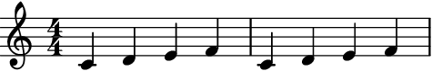
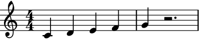
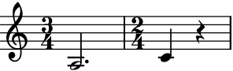
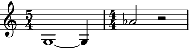
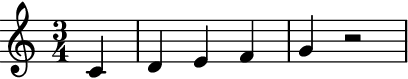

auxjad.fill_with_rests¶
-
auxjad.fill_with_rests(container: abjad.core.Container.Container)¶ Fills an
abjad.Containerwith rests in order to make it full.Returns the missing duration of the last bar of any container or child class. If no time signature is encountered, it uses LilyPond’s convention and considers the container as in 4/4.
>>> container1 = abjad.Container(r"c'4 d'4 e'4 f'4") >>> container2 = abjad.Container(r"c'4 d'4 e'4") >>> container3 = abjad.Container(r"c'4 d'4 e'4 f'4 | c'4") >>> container4 = abjad.Container(r"c'4 d'4 e'4 f'4 | c'4 d'4 e'4 f'4") >>> auxjad.fill_with_rests(container1) >>> auxjad.fill_with_rests(container2) >>> auxjad.fill_with_rests(container3) >>> auxjad.fill_with_rests(container4) >>> abjad.f(container1) { c'4 d'4 e'4 f'4 }

>>> abjad.f(container2) { c'4 d'4 e'4 r4 }

>>> abjad.f(container3) { c'4 d'4 e'4 f'4 c'4 r2. }
>>> abjad.f(container4) { c'4 d'4 e'4 f'4 c'4 d'4 e'4 f'4 }
Handles any time signatures as well as changes of time signature.
>>> container1 = abjad.Container(r"\time 4/4 c'4 d'4 e'4 f'4 g'") >>> container2 = abjad.Container(r"\time 3/4 a2. \time 2/4 c'4") >>> container3 = abjad.Container(r"\time 5/4 g1 ~ g4 \time 4/4 af'2") >>> auxjad.fill_with_rests(container1) >>> auxjad.fill_with_rests(container2) >>> auxjad.fill_with_rests(container3) >>> abjad.f(container1) { %%% \time 4/4 %%% c'4 d'4 e'4 f'4 g'4 r2. }
>>> abjad.f(container2) { %%% \time 3/4 %%% a2. %%% \time 2/4 %%% c'4 r4 }
>>> abjad.f(container3) { %%% \time 5/4 %%% g1 ~ g4 %%% \time 4/4 %%% af'2 r2 }
Note
Notice that the time signatures in the output are commented out with
%%%.This is because Abjad only applies time signatures to containers that belong to aabjad.Staff. The present function works with eitherabjad.Containerandabjad.Staff.>>> container = abjad.Container(r"\time 4/4 c'4 d'4 e'4 f'4 g'") >>> auxjad.fill_with_rests(container) >>> abjad.f(container) { %%% \time 4/4 %%% c'4 d'4 e'4 f'4 g'4 r2. } >>> staff = abjad.Staff([container]) >>> abjad.f(container) { \time 4/4 c'4 d'4 e'4 f'4 g'4 r2. }
Correctly handles partial time signatures.
>>> container = abjad.Container(r"c'4 d'4 e'4 f'4 g'4") >>> time_signature = abjad.TimeSignature((3, 4), partial=(1, 4)) >>> abjad.attach(time_signature, container[0]) >>> auxjad.fill_with_rests(container) >>> abjad.f(container) { %%% \partial 4 %%% %%% \time 3/4 %%% c'4 d'4 e'4 f'4 g'4 r2 }
Warning
If a container is malformed, i.e. it has an underfilled bar before a time signature change, the function raises a
ValueErrorexception.>>> container = abjad.Container(r"\time 5/4 g''1 \time 4/4 f'4") >>> auxjad.fill_with_rests(container) ValueError: 'container' is malformed, with an underfull bar preceeding a time signature change